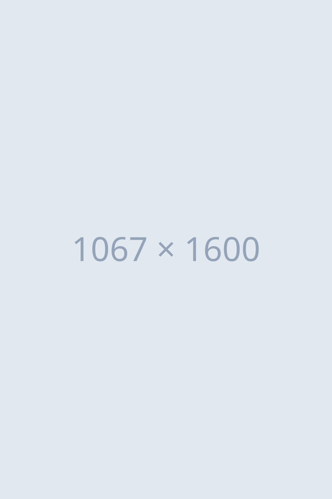

03Personal Series · Tokyo, 2026
After the Rain
Eleven nights in the back lanes of Shinjuku and Nakano, in the twenty minutes after the rain stops. Sixty-four frames on 35mm film; ten of them here.
- Nights walked
- 11
- Frames kept
- 64
- Format
- 35mm
- First shown
- 2026



“The rain clears the lanes for about twenty minutes. I learned to wait in doorways with the camera under my coat, and to walk the moment it stopped.”
The Book
After the Rain, in print
Sixty-four frames in the order they were shot, with a short essay by the writer who walked the first three nights with me.
- Pages
- 96, cloth bound
- Size
- 24 × 30 cm
- Edition
- 500, signed
- Price
- $58, shipped

Booking March to June 2027